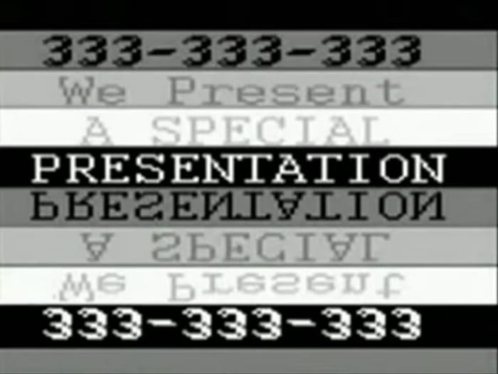

:format(webp)/cdn.vox-cdn.com/uploads/chorus_image/image/73330999/helldivers_2_victory.0.jpg)
:format(webp)/cdn.vox-cdn.com/uploads/chorus_image/image/73330319/hades2leadimage.0.jpg)
Перегляньте відгуки наших користувачів, щоб дізнатися їх враження від різних ігор.
Читайте про їхні враження, радійте разом з ними перемогам та діліться своїми власними враженнями та порадами для інших гравців.
| Топ ревью тижня | ||
|---|---|---|
|
Боротьба Sony та гравців Helldivers 2 | Гравці Helldivers 2 провели час у галактиці з моменту запуску, навчаючись працювати разом заради спільної справи. Коли автоматони таємничим чином повернулися, щоб загрожувати галактиці, тактики взялися за X і Discord, щоб заохотити шанувальників потрапити на правильні планети. Super Earth попросила Helldivers знищити два мільярди жуків, і гравці зробили це за кілька годин. Але найбільше скоординованих зусиль, яких доклали гравці, було спрямовано не проти помилок чи ботів, а проти видавця гри Sony — і після вихідних протестів Helldivers здобули величезний тріумф. |
| Посилання на оригінальний блог: Helldivers 2 players knew how to mobilize against Sony after training in-game | ||
|
Випуск Hades 2! | Настав час подолати лиходіїв і оволодіти силою богів. Розробник Supergiant Games випустив Hades 2 у ранній доступ у понеділок. Гра може бути попередньою версією, але це точно не повністю незавершена робота. Вибрана кількість гравців випробувала гру в рамках технічного тесту в квітні, і її персонажі вже зацікавили шанувальників. Тепер користувачі ПК з Windows можуть завантажити ранню версію гри в Steam і Epic Games Store. |
| Посилання на оригінальний блог: Hades 2 early access is out now — but should you play it? | ||
|  | Analog Horror - вайб жахів з VHS касет | Хоч культура 80-х і 90-х з їх VHS відеокасетами вже залишились в минулому. В наш час ми продовжуємо активно ностальгувати по тим часам. Достатньо згадати Stranger Things який пронизаний культурою 80-х. Або також згадати фільм Drive який зробив внесок в популяризацію в SynthWave(але ця тема для іншого раз). |
| Посилання на оригінальний блог: Analog Horror - вайб жахів з VHS касет | ||